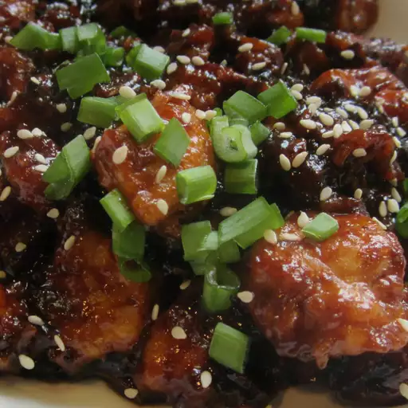

Instant Pot Honey-Garlic Chicken

Description
A delicious Honey-Garlic Chicken recipe made quick and easy with a Instant Pot! No need to waste money on take-out anymore!
But don't forget to bring some fortune cookies from the shop for that authentic take-out experience!
Ingredients
- ⅓ cup honey
- ⅓ cup soy sauce
- 3 cloves garlic, minced
- 3 tablespoons ketchup
- 2 tablespoons sriracha sauce
- 2 pounds chicken breast, cut into 1-inch cubes
- ¼ cup cornstarch
- 2 tablespoons vegetable oil
- ¼ cup chicken broth
- 2 green onions, chopped
- 1 teaspoon sesame seeds, or as desired
Steps
- Combine honey, soy sauce, garlic, ketchup, and sriracha sauce in a bowl; mix well and set aside.
- Place chicken pieces in a large bowl, add cornstarch, and toss to combine.
- Turn on a multi-functional pressure cooker (such as Instant Pot®) and select the Saute function.
Add oil until hot. Add 1/2 the chicken and cook for 3 minutes. Flip and cook 2 more minutes.
Transfer chicken to a plate and repeat with remaining chicken. Pour chicken broth into the empty Instant Pot®
and cook for 2 minutes, scraping up the brown bits with a wooden spoon to deglaze the pot.
Turn Instant Pot® off. Return chicken to the pot and pour honey mixture on top. Stir to coat with sauce.
- Close and lock the lid. Select high pressure according to manufacturer's instructions; set timer for 2 minutes. Allow 10 minutes for pressure to build.
- Release pressure carefully using the quick-release method according to manufacturer's instructions, about 5 minutes.
Unlock and remove the lid. Serve chicken sprinkled with green onions and sesame seeds.